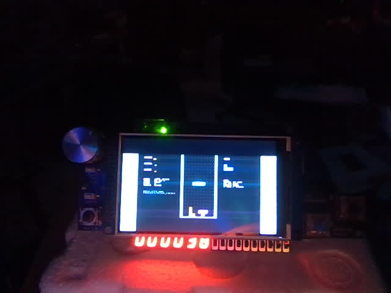
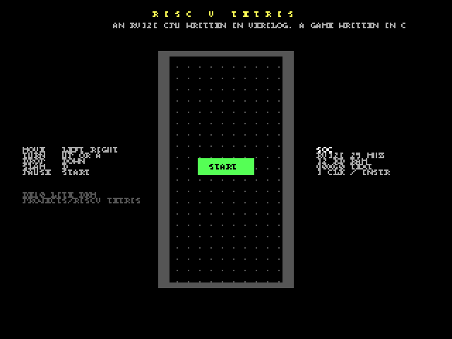

RISC-V Tetris
A computer inside the FPGA: a small RISC-V (RV32I) CPU written in Verilog, 32 KB of RAM, an 80 × 60 colour text screen and ten I/O registers. Then a toolchain for it, three Python files: an assembler, a small C compiler and an instruction-set simulator. Then Tetris, written in C, compiled by that compiler, running on that CPU on the board. The hardware was proven by running the same programs on the simulator and on the RTL and comparing every register write: identical over hundreds of thousands of instructions. New programs load over JTAG in six seconds, no rebuild.
No bitstream in the repo (a .sof is 3 MB per project): restore the .qar or use the sources here,
one build makes it in about three minutes. The RAM is initialised with the Tetris program (assets/tetris.mif), so the
board plays right after loading. The user guide has every command, including how to write and run your own program.
Contents
- What you will see
- Block diagram
- The toolchain
- How an instruction flows
- The game
- Numbers
- How it was tested
- Review log
- Status and what is next
- Files
What you will see


Power up: the title screen, PUSH START. Press Start (or KEY0): pieces fall into the 10 × 20 well. The joystick moves (held: auto-repeat), Up or A rotates, Down drops softly, B slams the piece down, Start pauses. Lines clear, the level rises every ten lines and the pieces fall faster; the buzzer clicks and chirps. All of it is C code running on the soft CPU at about 7 million instructions per second, updating once per video frame.

Block diagram
The toolchain
Everything a user needs is in the project folder and runs in the repo's env: no cross-compiler to download,
nothing to install. The compiler accepts a C subset that is enough for games and drivers (its docstring lists exactly
what, and it refuses the rest with a line number); the generated assembly is plain enough to read next to the C, which is
the point of the course this BKM belongs to.
How an instruction flows
- FETCH. The CPU puts
pcon the bus withreq. The RAM answers one clock later withackand the word; it becomesir. - EXEC. Everything is decoded from
irat once: the immediate, the two source registers, the ALU result, the branch condition, the next pc. ALU, branch and jump instructions finish here: the register is written (and a trace pulse tells the testbench),pcmoves on, back to FETCH. Three clocks. - MEM for loads and stores: the data address goes on the bus (with byte enables for
sb/sh); at the ack a load's byte or half is picked and sign- or zero-extended into the register. Five clocks. - The slaves. RAM, text RAM and I/O all answer in the same way (
ackone clock after the request), so the decode is one case onaddr[31:28]. The text RAM's second port is read by the screen 25 million times a second, independently. - The program waits for the frame counter to change, polls the buttons, updates the game, writes the cells that
changed. Tetris uses a few per cent of the CPU; the rest is spent spinning on
IO_FRAME.
The game
sw/tetris.c is 420 lines of the C subset: the seven pieces as 4 × 4 bit masks with four rotations, a 7-bag
randomiser fed by the RANDOM register, collision tests, delayed auto-shift for held moves, soft and hard drop,
line clearing with the classic 40 / 100 / 300 / 1200 points, a level every ten lines, speed from the level, the NEXT
preview, pause, game over. Each well cell is 2 × 2 characters (16 × 16 pixels) drawn with the screen's block glyph in
the piece's colour, with a darker quarter for a bevel; the well is redrawn only when something moved. The score goes
to the 7-segment digits in BCD, the level to the LEDs, sounds to the buzzer as half-periods.
Numbers
| Device | MAX 10 10M50DAF484C7G, Quartus Prime Lite 17.1 |
| Logic | 10,658 logic elements (21 %), 6,435 registers, no multipliers (RV32I has none; the CPU is about 2,900 LEs of it, 1,024 of them the register file) |
| Memory | 1,277,696 bits (76 %): the 32 KB RAM (262,144), the text RAM (76,800), the debug screen capture (921,600; not needed to play), the LCD command ROM and the ADC store |
| CPU | RV32I, multi-cycle: 3.10 clocks per instruction on the ISA test, 3.31 on the C suite, 3.37 on Tetris; about 7.5 MIPS at 25 MHz |
| Program | Tetris: 20,352 bytes (62 % of the RAM) including the runtime; the C suite 12.7 KB; the compiler emits about 12 instructions per C line |
| Toolchain | cc.py 1,320 lines, asm.py 440, rv32sim.py 340; all Python, standard library only |
| Clocks | 25 MHz SoC and VGA, 50 MHz ADC, 100 MHz LCD; timing met with the generated .sdc |
| Build | about 3 minutes; 83 warnings, all from the library IP and unused pins |
| Program load | 6 s over JTAG (tools/load.py), versus a 3-minute rebuild |
How it was tested
The toolchain, on the simulator
sw/test_isa.s: every instruction class, every load and store size, jumps, the screen and I/O registers, a loop; ends with EXIT 0 and prints OK on the UART.sw/test_c.c: 19 checks of the compiler: arithmetic with signs, the runtime multiply / divide / modulo, unsigned math, shifts, comparisons, casts, globals with initialisers, 2-D arrays, pointer arithmetic, recursion, eight arguments, every loop andswitch, compound assignment,++/--, char wrap-around, macros, the screen and I/O macros. Each prints its number and ok / FAIL; the exit code is the number of failures: 0.tools/play_test.py: plays Tetris blind (random moves, a rotate, a hard drop per piece) for 60 pieces and checks the score grows, LINES counts a cleared row (seed 0x1d481499 clears one), LEVEL = LINES / 10, the digits hold the score in BCD, GAME OVER arrives. 10 s.
The hardware, in lock-step with the simulator
sim/tb_soc.sv runs the same images on the RTL CPU in Icarus and writes the same trace (every register write,
every store). tools/trace_compare.py: ISA test identical, C suite identical, Tetris 294,803 lines identical.
This is how the one real CPU bug was found in minutes: the arithmetic shift coming out logical. The testbench also
dumps the UART text and the text screen, so a program's output can be read without a board.
On the board
Programmed, the title appeared (read back over USB). tools/load.py replaced the program in 6 s. Keys sent as
USB letters started a game, moved and dropped pieces; the capture shows the well, the score (30) and the NEXT preview; the
webcam shows the LCD and 000030 on the 7-segment digits.
Only a person can check
The joystick feel and the auto-repeat speed, the sounds, the pace of the levels, and the power cycle after a flash.
Review log
| Found | Cause | Fix |
|---|---|---|
| A function returned to address 0x6E (the letter 'o') | the compiler put locals at s0-4, where the prologue saves ra | locals start below the saved ra / s0; seen in the simulator's trace |
i > 0 loops never ran; comparisons with constants inverted | the constant-operand shortcut loaded the constant into the register meant for the left value | operand order fixed; the C suite now covers every comparison form |
10 + 20 * 2 did not parse | the shortcut accepted a constant followed by a tighter operator | only operators of the same or looser precedence end a constant operand |
4000000000u % 7 folded as signed | constant folding ignored the u suffix | unsigned folding for / % >> and comparisons |
srai gave a logical shift on the RTL (simulator right) | ?: with an unsigned branch made >>> logical | the arithmetic shift on its own signed wire (gotcha 20) |
cls took 300k instructions | 80 * 60 recomputed with a 32-step software multiply every iteration | constant folding; multiplies by small constants as shifts and adds: 10 software multiplies left in the game |
| Testbench syntax errors | cell is a Verilog keyword; a declaration inside an unnamed block | renamed; declared at module scope (gotcha 21) |
| First store of s0 traced as xxxxxxxx | the register file had no reset | registers reset to 0, like the simulator |
| The well's frame invisible in captures | the checkerboard glyph vanishes at half resolution | frames drawn with the full block |
| A scripted game took 4.5 minutes to simulate | 95 % of the instructions were the wait-for-frame spin | the simulator skips a short backward loop that read FRAME (off while tracing): 10 s |
Status and what is next
| Item | Status |
|---|---|
| CPU: every RV32I instruction, loads / stores of all sizes, traps on illegal | verified: lock-step with the simulator, on the board |
| Assembler, C compiler, simulator, build and load scripts | verified: test suites, CI |
| Text screen, I/O registers, UART, JTAG program load | verified on the board |
| Tetris: pieces, rotation, drops, lines, levels, score, pause, game over | verified: simulation (scripted) and board (USB keys) |
| Joystick feel, sounds, the pace | to do by a person |
| Interrupts, a timer, CSRs, the M extension, structs and typedef in the compiler | not built, by choice |
Files
| File | What it is |
|---|---|
index.html, spec.html, guide.html | this overview, the architecture spec, the user guide |
riscv_tetris.qar | the whole Quartus project (sources, settings, the program image) |
src/rv32_cpu.sv | the CPU |
src/rv32_soc.sv, src/soc_ram.sv | the bus decode, the I/O registers, the text RAM port, the UART; the editable 32 KB RAM |
src/text_screen.sv | 80 × 60 cells to pixels |
src/riscv_tetris_top.sv | the board: clocks, display chain, pad, USB letters, hold / reset, 7-segment, buzzer |
tools/memmap.py | the memory map; writes sw/soc.h |
tools/asm.py, tools/cc.py, tools/rv32sim.py | assembler, C compiler, instruction-set simulator |
tools/build.py, tools/load.py, tools/trace_compare.py, tools/play_test.py | build an image; load it over JTAG; compare traces; play a scripted game |
sw/tetris.c, sw/lib.h, sw/soc.h, sw/crt0.s | the game, the little library, the generated header, the runtime |
sw/test_isa.s, sw/test_c.c | the ISA test, the compiler's test suite |
sim/tb_soc.sv | runs any image on the RTL: trace, UART text, screen dump |
assets/tetris.mif, assets/tetris.hex | the program image the FPGA build and the simulator use |
media/ | the pictures on these pages |